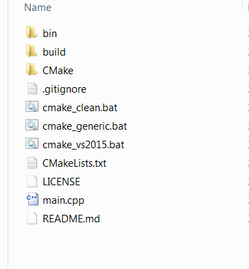

Hello
i followed the documentetion : https://urho3d.github.io/documentation/1.4/_using_library.html
creating new project using static lib .
but im getting CMAKE errors
i compiled the Urho3D lib using VS 2015 succefuly using CMAKE
the cmake command is :
cmake_vs2015.bat d:\dev\cpp\3d\urho3d\UrhoSampleProject\build -DURHO3D_WIN32_CONSOLE=1 -DURHO3D_HOME=d:\dev\cpp\3d\urho3d\Urho3D\build
and im getting :
– The C compiler identification is MSVC 19.0.23026.0
– The CXX compiler identification is MSVC 19.0.23026.0
– Check for working C compiler: C:/Program Files (x86)/Microsoft Visual Studio 14.0/VC/bin/cl.exe
– Check for working C compiler: C:/Program Files (x86)/Microsoft Visual Studio 14.0/VC/bin/cl.exe – works
– Detecting C compiler ABI info
– Detecting C compiler ABI info - done
– Check for working CXX compiler: C:/Program Files (x86)/Microsoft Visual Studio 14.0/VC/bin/cl.exe
– Check for working CXX compiler: C:/Program Files (x86)/Microsoft Visual Studio 14.0/VC/bin/cl.exe – works
– Detecting CXX compiler ABI info
– Detecting CXX compiler ABI info - done
– Detecting CXX compile features
– Detecting CXX compile features - done
CMake Error at CMakeLists.txt:21 (include):
include could not find load file:
Urho3D-CMake-common
– Found Urho3D: D:/dev/cpp/3d/urho3d/Urho3D/build/lib/Urho3D_d.lib (found version “1.6-720-g2e19e8a”)
CMake Error at CMakeLists.txt:28 (define_source_files):
Unknown CMake command “define_source_files”.
– Configuring incomplete, errors occurred!
See also “D:/dev/cpp/3d/urho3d/UrhoSampleProject/build/CMakeFiles/CMakeOutput.log”.
this is my files structure :

and this is my CmakeLists.txt
# Set project name
project (MyProjectName)
# Set minimum version
cmake_minimum_required (VERSION 2.8.6)
if (COMMAND cmake_policy)
cmake_policy (SET CMP0003 NEW)
if (CMAKE_VERSION VERSION_GREATER 2.8.12 OR CMAKE_VERSION VERSION_EQUAL 2.8.12)
# INTERFACE_LINK_LIBRARIES defines the link interface
cmake_policy (SET CMP0022 NEW)
endif ()
if (CMAKE_VERSION VERSION_GREATER 3.0.0 OR CMAKE_VERSION VERSION_EQUAL 3.0.0)
# Disallow use of the LOCATION target property - therefore we set to OLD as we still need it
cmake_policy (SET CMP0026 OLD)
# MACOSX_RPATH is enabled by default
cmake_policy (SET CMP0042 NEW)
endif ()
endif ()
# Set CMake modules search path
set (CMAKE_MODULE_PATH ${CMAKE_SOURCE_DIR}/CMake/Modules)
# Include Urho3D Cmake common module
include (Urho3D-CMake-common)
# Find Urho3D library
find_package (Urho3D REQUIRED)
include_directories (${URHO3D_INCLUDE_DIRS})
# Define target name
set (TARGET_NAME MyExecutableName)
# Define source files
define_source_files ()
# Setup target with resource copying
setup_main_executable ()
what is wrong here ?
Thanks